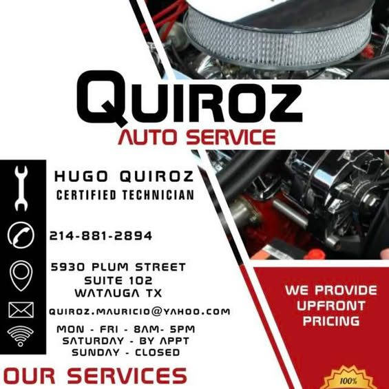

Watauga's neighborhood shop at 5930 Plum Street, Suite 102 — transmission repair, electrical problems and A/C, with the owner, Hugo Quiroz, on the work.

Straight from the shop's own business card: Hugo Quiroz, certified technician, Mon–Fri 8AM–5PM, Saturday by appointment, Sunday closed — and “We provide upfront pricing.”
Mon–Fri 8 AM – 5 PM
Sat 8 AM – 1 PM
Sun closed
per public listing; the business card says Saturday by appointment
5930 Plum St, Suite 102
Watauga, TX 76148